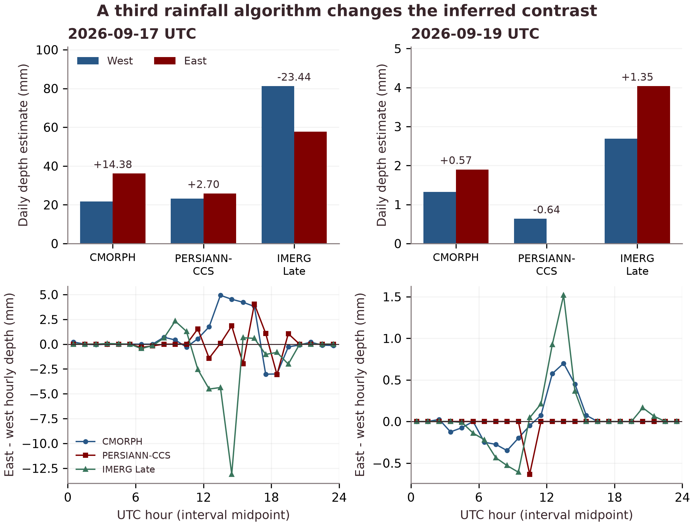

LATEST RECEPTIONPARTIAL CAPTURE
Clouds, straight from orbit.
Actual locally decoded imagery. Missing scan lines remain visible.
Sagap + satellite. Follow our station, inspect original Meteor imagery, and explore what the observations can tell us about Philippine weather.
Actual locally decoded imagery. Missing scan lines remain visible.
RTL-SDR → SatDump → CADUs → MSU-MR image products.
Loading orbital data…
Calculating…
| Satellite | Date · PHT | Acquisition | Peak elevation | Loss of signal | Duration | Calendar |
|---|
Horizon events use a 10° mask; the filter applies to maximum elevation. Passes are predictions, not scheduled recordings.
Received-scan timing is checked before any orbit segment is drawn.
Green line: satellite subtrack for time-checked scans. Amber ring: approximate station region. No image footprint or geographic image overlay is asserted.
Select an observation.
Our two-date study tests that assumption across fixed areas in Nueva Ecija and Aurora.
CMORPH and PERSIANN-CCS estimated greater eastern rainfall in four easterly-flow hours. Both study areas were fully cloudy in every matching Himawari snapshot. Adding IMERG Late reverses three of those rainfall contrasts. The single three-algorithm positive contrast changes sign under some box shifts.
Six audited receptions on 4–6 November demonstrate our antenna-to-image pipeline. Missing bands remain visible. These November observations do not enlarge the September weather sample; image pixel registration remains unverified.
Provider-geolocated cloud masks supply the quantitative cloud descriptor for 17 and 19 September. The east-side occupancy was higher in 12 of 48 snapshots. Cloud cover is not rainfall depth.
All 96 original IMERG Late Run files are preserved and hash-checked. Offline replay verifies 144 box/hour records and 2,736 placement records. The base sampling uses one western and two eastern native cells, limiting fine-scale interpretation.
No daily east–west contrast sign is shared by all three algorithms on either date. IMERG estimates more western rainfall on 17 September, opposite to both original algorithms. Products have different spatial support and can share inputs; no one estimate is treated as ground truth.
| Date | Algorithm | West | East | East − west |
|---|---|---|---|---|
| 17 Sep | CMORPH | 21.75 | 36.12 | +14.38 |
| 17 Sep | PERSIANN-CCS | 23.15 | 25.84 | +2.70 |
| 17 Sep | IMERG Late | 81.23 | 57.79 | -23.44 |
| 19 Sep | CMORPH | 1.32 | 1.90 | +0.57 |
| 19 Sep | PERSIANN-CCS | 0.64 | 0.00 | -0.64 |
| 19 Sep | IMERG Late | 2.69 | 4.04 | +1.35 |
Swipe the table to see all columns.
CMORPH/PERSIANN placement robustness does not extend to all three algorithms. IMERG is Late Run, with V07C filenames and a 07B internal version field, not Final Run. The terrain-model control severely underestimates rainfall; terrain-caused enhancement is not established. These remain two weather dates.

Original observations, with their gaps, products, and source records.
No captures match. Try another satellite or date.
Original CADUs and processing logs remain intact. This portal copies selected evidence without changing the source archive. Raw IQ is retained separately on the Pi where documented.
Count complete 1024-byte records, distinct records, expected sync markers, and trailing bytes. SHA-256 hashes connect each download to its archived source.
Decoded products can contain missing lines. Colour composites are variants of the same observation. Geographic overlays are withheld pending scan-time validation.